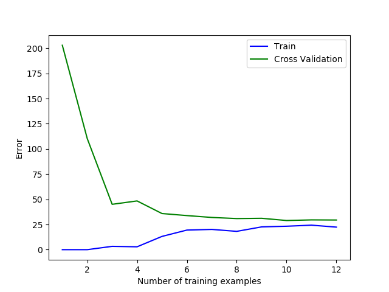
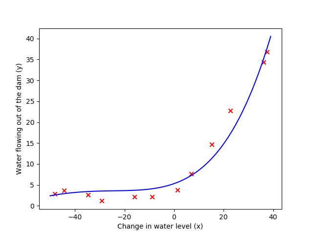

Regularized Linear Regression
导入如下包：1
2
3
4from scipy.io import loadmat
import numpy as np
import matplotlib.pyplot as plt
import scipy.optimize as op
Visualizing the dataset
读取数据：1
2
3
4
5
6
7
8data_mat = loadmat('ex5data1.mat')
Xtrain = np.array(data_mat['X'])
ytrain = np.array(data_mat['y'])
Xtest = np.array(data_mat['Xtest'])
ytest = np.array(data_mat['ytest'])
Xval = np.array(data_mat['Xval'])
yval = np.array(data_mat['yval'])
画出训练集的散点图：1
2
3
4
5
6
7def plotScatter(Xtrain, ytrain):
plt.scatter(Xtrain, ytrain, c='r', marker='x')
plt.xlabel('Change in water level (x)')
plt.ylabel('Water flowing out of the dam (y)')
plotScatter(Xtrain, ytrain)
plt.show()
Regularized linear regression cost function
Cost Function:
$J(\theta)=\frac{1}{2m}\displaystyle\sum^{m}_{i=1}(h_\theta(x^{(i)})-y^{(i)})^2+\frac{\lambda}{2m}\displaystyle\sum^{n}_{j=1}\theta^2_j$1
2
3
4
5
6
7
8def costFunction(theta, X, y, l=1):
m = len(y)
X = np.c_[np.ones((m,)), X]
y = np.reshape(y,(m,))
h = np.dot(X, theta)
J = np.sum(np.power(h - y,2)) / (2 * m)
J += (l /(2 * m)) * np.dot(theta[1:].T, theta[1:])
return J
Regularized linear regression gradient
Correspondingly, the partial derivative of regularized linear regression’s cost for $\theta_j$ is defined as:
$\frac{\partial{J(\theta)}}{\partial{\theta_j}}=\frac{1}{m}\displaystyle\sum^{m}_{i=1}(h_\theta(x^{(i)}-y^{(i)})x_j^{(i)}\qquad for\quad j=0$
$\frac{\partial{J(\theta)}}{\partial{\theta_j}}=\frac{1}{m}\displaystyle\sum^{m}_{i=1}(h_\theta(x^{(i)}-y^{(i)})x_j^{(i)}+\frac{\lambda}{m}\theta_j\qquad for\quad j\geq1$1
2
3
4
5
6
7
8
9def gradient(theta, X, y, l=1):
m = len(y)
X = np.c_[np.ones((m,)), X]
y = np.reshape(y,(m,))
h = np.dot(X, theta)
grad = np.dot(X.T, h - y) / m
theta[0] = 0
grad += (l / m) * theta
return grad
Fitting linear regression
Train Function:1
2
3
4
5
6def trainLinearRegression(initial_theta, X, y, l):
fmin = op.minimize(fun = costFunction,
x0=initial_theta,
args=(X, y, l),
jac = gradient)
return fmin
1 | l = 0 |
此处，我们另正则化参数为0，因为$\theta$的大小对低维度没有帮助。
结果：1
2
3
4
5
6
7
8
9
10
11 fun: 22.373906495108923
hess_inv: array([[1.03163796, 0.00618508],
[0.00618508, 0.00121518]])
jac: array([-1.30694433e-09, -2.99831324e-08])
message: 'Optimization terminated successfully.'
nfev: 6
nit: 5
njev: 6
status: 0
success: True
x: array([13.08790351, 0.36777923])
Fit:1
2
3
4
5
6
7
8
9
10
11def plotLine(theta, p):
x_range = range(-50, 40)
y_range = theta[0]
for i in range(1, p + 1):
y_range += np.power(x_range, i) * theta[i]
plt.xticks(range(-50, 41, 10))
plt.yticks(range(-5, 41, 5))
plt.plot(x_range,y_range,c='blue')
plotLine(fmin.x, 1)
plt.show()
此处p为假设函数（多项式）的最高幂次，为下文服务。
Bias-variance
Learning curves
学习曲线能够很好的帮我们调试学习算法。
学习曲线通过样本数量的递增，来刻画训练集的损失度和验证集的损失度，通过曲线来判断学习算法的性能。1
2
3
4
5
6
7
8
9
10
11
12def learningCurve(theta, Xtrain, ytrain, Xval, yval, l):
error_train,error_val = np.zeros((13,)), np.zeros((13, ))
for i in range(1, 13):
fmin_i = trainLinearRegression(theta, Xtrain[:i,:], ytrain[:i,:], l)
theta_final = fmin_i.x
error_train[i] = fmin_i.fun
error_val[i] = costFunction(theta_final, Xval, yval)
plt.plot(range(1, 13), error_train[1:],c='blue',label='Train')
plt.plot(range(1, 13), error_val[1:],c='green',label='Cross Validation')
plt.xlabel('Number of training examples')
plt.ylabel('Error')
plt.legend()
结果为：

我们发现，随着样本数量的增加，训练误差与验证误差都很高。因此可以判断该学习算法有高偏差（high bias）问题，即欠拟合。因此我们需要通过多项式回归来使得模型的拟合度更好。
Polynomial regression
通过上述学习曲线，我们发现模型欠拟合，因此我们需要去增加特征来获得更好的模型。我们这里采用多项式回归（多项式回归本质上也是线性回归）。
我们构造如下假设函数：
$h_{\theta}(x)=\theta_0+\theta_1(waterLevel)+\theta_2(waterLevel)^2+…+\theta_p(waterLevel)^p$
$\qquad\quad=\theta_0+\theta_1x_1+\theta_2x_2+…+\theta_px_p$
1 | def ployFeatures(X, p): |
选取p=4，结果：1
2
3
4
5
6
7
8
9
10
11
12[[-1.59367581e+01 2.53980260e+02 -4.04762197e+03 6.45059724e+04]
[-2.91529792e+01 8.49896197e+02 -2.47770062e+04 7.22323546e+05]
[ 3.61895486e+01 1.30968343e+03 4.73968522e+04 1.71527069e+06]
[ 3.74921873e+01 1.40566411e+03 5.27014222e+04 1.97589159e+06]
[-4.80588295e+01 2.30965109e+03 -1.10999128e+05 5.33448815e+06]
[-8.94145794e+00 7.99496701e+01 -7.14866612e+02 6.39194974e+03]
[ 1.53077929e+01 2.34328523e+02 3.58705250e+03 5.49098568e+04]
[-3.47062658e+01 1.20452489e+03 -4.18045609e+04 1.45088020e+06]
[ 1.38915437e+00 1.92974986e+00 2.68072045e+00 3.72393452e+00]
[-4.43837599e+01 1.96991814e+03 -8.74323736e+04 3.88057747e+06]
[ 7.01350208e+00 4.91892115e+01 3.44988637e+02 2.41957852e+03]
[ 2.27627489e+01 5.18142738e+02 1.17943531e+04 2.68471897e+05]]
Learning Polynomial Regression
通过观察上述特征值，我们发现X与y的值相差过大，因此我们需要进行特征缩放，即特征标准化（feature normalization）。
对于每一个特征值，我们采用:
$\frac{x^{(i)}-mean}{std}$, $std$为标准差（standard deviations），
来进行特征缩放。1
2
3
4
5
6
7def featureNormalize(X):
mean = np.mean(X, axis=0)
std = np.std(X, axis=0)
# (12, 8)
mean = np.reshape(np.tile(mean, X.shape[0]),X.shape)
std = np.reshape(np.tile(std, X.shape[0]),X.shape)
return (X - mean) / std
此处axis是对X的每一列进行求mean与std。np.title(mean,x)是对mean进行复制x次。
Fit:
我们先通过多项式对点进行拟合。此处我们选择p=7（p=8拟合不出来啊！）。拟合时不该对数据进行特征标准化。1
2
3
4
5
6Xtrain = ployFeatures(Xtrain, p)
theta = np.ones((Xtrain.shape[1] + 1,))
fmin = trainLinearRegression(theta, Xtrain, ytrain,l)
theta = fmin.x
plotLine(theta, p)
plt.show()
结果如下：
我们发现当p=7时，拟合程度过好，出现了过拟合状态。因此我们需要去调整p值，使得到的模型具有泛化的能力。最后经过调整试验，我们选择了p=4。
结果如下：
Learning Curve:1
2
3
4
5
6Xtrain = ployFeatures(Xtrain, p)
Xtrain = featureNormalize(Xtrain)
Xval = ployFeatures(Xval, p)
Xval = featureNormalize(Xval)
theta = np.ones((Xtrain.shape[1] + 1,))
learningCurve(theta, Xtrain, ytrain, Xval, yval, l)
结果如下：
观察此图，我们发现训练误差一直为0，可以推出该模型高方差，即过拟合。解决过拟合问题，我们可以调整正则化参数$\lambda$（之前$\lambda=0$）来得到更好的模型。
Adjusting the reg- ularization parameter
当我们改变$\lambda=1$时，拟合与学习曲线如下所示：

我们发现，相比于$\lambda=0$，$\lambda=1$的效果更好，没有高方差和高偏差问题。
另$\lambda=1000$，拟合图如下：

我们发现此时拟合图已经偏离，出现欠拟合问题。
Selecting λ using a cross validation set
为了找到一个合适的$\lambda$参数值，我们实现一个方法来自动选取$\lambda$值。
我们先将增加假设函数幂次与特征缩放结合：1
2
3
4
5def prepare_ploy(Xtrain, Xval, Xtest, p):
Xtrain = featureNormalize(ployFeatures(Xtrain, p))
Xval = featureNormalize(ployFeatures(Xval, p))
Xtest = featureNormalize(ployFeatures(Xtest, p))
return Xtrain, Xval, Xtest
绘制随$\lambda$变化的曲线：1
2
3
4
5
6
7
8
9
10
11
12
13
14def validationCurve(theta, Xtrain, ytrain, Xval, yval):
error_train, error_val = [], []
l = np.arange(0,2,0.1)
for lr in l:
fmin_i = trainLinearRegression(theta, Xtrain, ytrain, lr)
theta_final = fmin_i.x
error_train.append(fmin_i.fun)
error_val.append(costFunction(theta_final, Xval, yval, lr))
plt.plot(np.arange(0,2,0.1), error_train,c='blue',label='Train')
plt.plot(np.arange(0,2,0.1), error_val,c='green',label='Cross Validation')
plt.xticks(l)
plt.xlabel('lambda')
plt.ylabel('Error')
plt.legend()
结果如下图：
我们观察发现，当$\lambda=0.3$的时候，验证损失达到最小（曲线的范围是我通过比较进行规范的，并没有选择作者给出的[0, 0.001, 0.003, 0.01, 0.03, 0.1, 0.3, 1, 3, 10]。
注：最早之前尝试了p=3，发现曲线在0-5之间根本就没变化，后来考虑到假设函数在低维的时候，$lambda$基本不起作用，因此尝试将p=4，这时发现了曲线的变化。
还有就是p的选择没有根据啊，ex-5.pdf莫名的选择了p=8，但是曲线拟合不出来，而且最后它给出的拟合图应该是p=3的吧，有点凌乱。并且作者最后的曲线给出了$\lambda=3$，而github上别人给出了$\lambda=0.3$，而我得出的也是0.3，是他们选取的p值不同么，感觉都没有说明清楚。（我发现应该是ex-5.pdf上的曲线横轴的坐标标错了吧，作者选的是0.01么？？？）
Computing test set error
1 | Xtrain, Xval, Xtest = prepare_ploy(Xtrain, Xval, Xtest, p) |
最后测试集的误差为：8.85410707764498300（3.8599的误差怎么得出来的啊！我这差的太多了。不过对比GitHub上的作者，我和他的数值是非常接近的！！！）